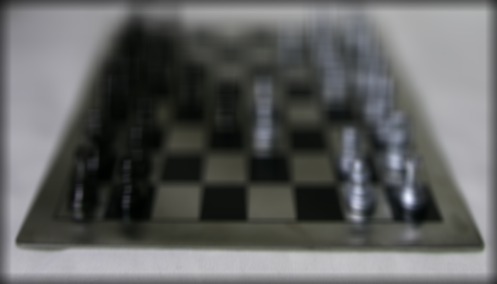
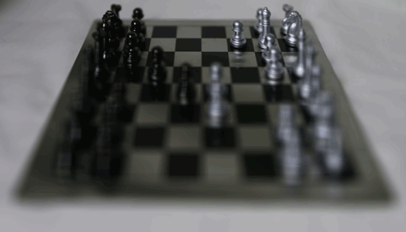

- Project Intro
- Depth Refocusing
- Aperture Adjustment
- Summary
Light Field Camera
Karl Cempron: CS194-26-AEG
Capturing multiple images over a plane orthogonal to the optical axis enables achieving complex effects using very simple operations like shifting and averaging. The goal of this project is to reproduce some of these effects using real lightfield data. Using rectified images from the Stanford Light Field Archive, I reproduced both the refocusing and aperture adjustment effects that can be made with a light field camera.
A sequence focusing on different segments of this image!
Depth Refocusing
The objects which are far away from the camera do not vary their position significantly when the camera moves around while keeping the optical axis direction unchanged. The nearby objects, on the other hand, vary their position significantly across images. Averaging all the images in the grid without any shifting will produce an image which is sharp around the far-away objects but blurry around the nearby ones.
A general equation is as follows: averaged_image = sum(image_list) / len(image_list)
Here are examples using 289 images taken from a 17 x 17 grid:
Averaged Chess Board
Averaged Rock Piece
Similarly, shifting the images to a centralized reference multiplied by a scalar w such that
(x_shifted, y_shifted) = w * (x, y), along with averaging, allows one to focus on object at different depths.
w = 1
w = 2
w = 3
w = 4
w = 1
w = 2
w = 3
w = 4
The resulting gifs show a sequence of depth refocusing where focus shifts from top to bottom as w inreases from 1 to 4. Notice that as w reaches the bounds mentioned, as is the case with w = 4, focus is directed towards the edge causing majority of the image to be blurred.
Chess Refocusing
Rock Refocusing
The Mid-Way Face
Once the correspondences have been obtained, I compute the Mid-Way Face of the two images by doing the following:
1. Compute the weighted average shape for some given weight t that ranges between [0, 1] and each point in both image A and B. In this case, the value I used was t = 0.5 .
The equation used was: average_shape = t * image_A_points[i] + (1 - t) * image_B_points[i]
2.Given the points for Image A, Image B, and the Average Shape, we use Delauney Triangulation to obtain a set of triangles for the corresponding points and calculate the inverse affine matrices for each triangle.Specifically, computing the affine transform from the target (in the average shape) back to the source image. This was done for each triangle in image A, and then for every triangle in image B. I then warped all the triangles from image A and B to the triangles in the Average Shape to obtain a warped image.
3.The last step was to cross-dissolve the colors by finding the weighted color averages of Image A and Image B. Prior to this, I used Photoshop to alter the colors so that the same weight of t = 0.5 could be used.
The equation used was: mid_way_face[x, y] = t * image_A[xA, yA] + (1 - t) * image_B[xB, yB] for each (x, y) pair in the Average Shape and the corresponding mapped pairs found from step 2.
 Image A
Image A
 Mid-Way Face
Mid-Way Face
 Image B
Image B
I realized that the morph from myself to George Clooney was too seamless so I wanted to challenge my morph with a face that had different facial features. Take a look at the corresponding morphs along with a special bonus morph on the next section!
 Image A
Image A
 Mid-Way Face
Mid-Way Face
 Image B
Image B
It's Morphing Time
Using the algorithm used to find the Mid Way Face, we can vary the value of t between [0, 1] by a distribution of 45 frames. After obtaining 45 T Way Faces ,I take each t as a timestep and create a gif of all 45 frames. The results are as follows:
Since I used 60 points for this morph and had similar facial features, it is very difficult to tell exactly at what point I turn into George Clooney and vice versa.

While the two faces in this example were quite different, it goes to show that using 70 points will still create a tight warp. I found it quite interesting how the morphed image's forehead presented the most change.

Here I try to break the laws of physics by morphing myself into Morty Smith. Let's just say that you won't sleep at night after this one.

"There's an infinite number of realities Morty." - Rick Sanchez